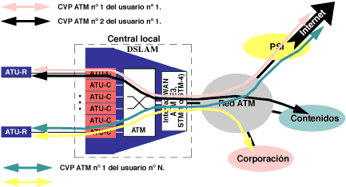
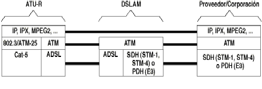

¿Cómo se puede sacar provecho de esta gran velocidad de acceso? Las redes de comunicaciones de banda ancha emplean el ATM para la conmutación en banda ancha. Desde un primer momento, dado que el ADSL se concibió como una solución de acceso de banda ancha, se pensó en el envío de la información en forma de células ATM sobre los enlaces ADSL.
En los estándares sobre el ADSL, desde el primer momento se ha contemplado la posibilidad de transmitir la información sobre el enlace ADSL mediante células ATM. La información, ya sean tramas de vídeo MPEG2 o paquetes IP, se distribuye en células ATM, y el conjunto de células ATM así obtenido constituye el flujo de datos que modulan las subportadoras del ADSL DT.
Si en un enlace ADSL se usa ATM como protocolo de enlace, se pueden definir varios circuitos virtuales permanentes (CVPs) ATM sobre el enlace ADSL entre el ATU-R y el ATU-C. De este modo, sobre un enlace físico se pueden definir múltiples conexiones lógicas cada una de ellas dedicadas a un servicio diferente. Por ello, ATM sobre un enlace ADSL aumenta la potencialidad de este tipo de acceso al añadir flexibilidad para múltiples servicios a un gran ancho de banda.
Otra ventaja añadida al uso de ATM sobre ADSL es el hecho de que en el ATM se contemplan diferentes capacidades de transferencia (CBR, VBR-rt, VBR-nrt, UBR y ABR), con distintos parámetros de calidad para cada circuito. De este modo, además de definir múltiples circuitos sobre un enlace ADSL, se puede dar un tratamiento diferenciado a cada una de estas conexiones, lo que a su vez permite dedicar el circuito con los parámetros de calidad más adecuados a un determinado servicio (voz, vídeo o datos)

En los módems ADSL se pueden definir dos canales, uno el canal "fast" y otro el "interleaved". El primero agrupa los CVPs ATM dedicados a aplicaciones que pueden ser sensibles al retardo, como puede ser la transmisión de voz. El canal "interleaved", llamado así porque en el se aplican técnicas de entrelazado para evitar pérdidas de información por interferencias, agrupa los CVPs ATM asignados a aplicaciones que no son sensibles a retardos, como puede ser l a transmisión de datos.
A nivel de enlace, algunos suministradores de equipos de central para ADSL han planteado otras alternativas al ATM, como PPP sobre ADSL y frame-relay sobre ADSL, pero finalmente no han tenido mucho predicamento.
Los estándares y la industria han impuesto el modelo de ATM sobre ADSL. En ese contexto, el DSLAM pasa a ser un conmutador ATM con múltiples interfaces, una de ellas sobre STM-1, STM-4 y el resto ADSL-DT, y el núcleo del DSLAM es una matriz de conmutación ATM sin bloqueo. De este modo, el DSLAM puede ejercer funciones de policía y conformado sobre el tráfico de los usuarios con acceso ADSL. En la Figura 14: Torre de protocolos con ATM sobre ADSL se muestra la torre de protocolos con ATM sobre ADSL.

|
|
|
|